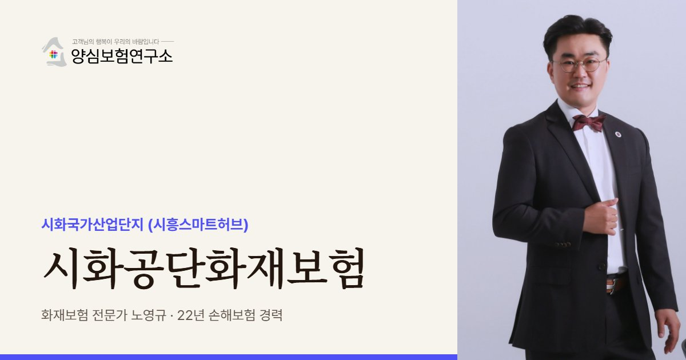

시화공단화재보험은 시흥 시화국가산업단지와 시화MTV 입주 공장의 화재 재산 손해와 이웃 배상책임에 대비하는 보험입니다. 50인 미만 공장이 98% 이상이고 임차 비율이 65%를 넘어 한 건물 여러 업체 구조를 먼저 봅니다. 본단지와 MTV는 건물 연식과 업종이 다릅니다.
시화공단화재보험 보장 항목
- 기계·금속 설비: 기계 업종이 약 59%인 시화 본단지의 가공기계 (절삭유·분진·용접 불티 발화)
- 철강·금속 재고: 철강 비중이 높은 시화MTV 공장의 무거운 재고 (화재 뒤 변형·오염으로 가치 하락)
- 임차자·이웃 배상: 칸칸이 나뉜 시화 임차 공장에서 옆 호실로 번진 화재 손해
- 납품 사슬 휴업: 시화 부품 공장이 멈춰 완성품 업체 납기까지 흔들린 기간의 손실과 위약 위험
시화공단화재보험 보험료 산정 기준과 가입 시 고려사항
- 소방 설비 현황: 스프링클러·옥내소화전·감지기 유무 (식품공장 스프링클러 미설치 보도 사례)
- 구역 구분: 본단지, 시화MTV, 시화기계유통단지 중 소속 구역과 건물 연식
- 동별 가입금액: 정왕동 공장이 여러 동이면 동마다 구조·용도·보관 재산별로 나눠 적은 금액
- 화기 작업 관리: 용접·절단 작업 빈도와 노후 배선·증설 전력 설비 점검 기록
작성 노영규 · 양심보험연구소 대표 · 손해보험 22년 ·

시화공단은 작은 공장이 끝없이 이어지는 구조라 한 곳의 불이 여러 업체의 문제가 되기 쉽습니다. 노영규 대표가 공장 한 동 한 동의 쓰임새와 이웃 관계부터 확인합니다.
시화공단 안내
시화공단, 왜 공장화재보험이 중요할까요?
시화공단화재보험은 시흥 시화국가산업단지(시흥스마트허브)와 시화MTV에 입주한 공장이 화재로 인한 재산 손해와 이웃 공장에 대한 배상책임을 대비하는 보험을 뜻합니다. 시화공단은 2026년 6월 기준 11,344개사, 고용 11만 7천여 명이 모인 수도권 최대 규모의 산단입니다.
업종 구성은 기계가 58.9%로 압도적이고 전기전자(15.9%), 석유화학(6.6%), 철강(5.8%)이 뒤를 잇습니다. 단지 안에 시화기계유통단지가 있을 만큼 금속가공과 기계 부품 공장이 두껍게 모여 있어, 절삭유와 분진, 용접 불티처럼 기계 공정에서 나오는 화재 원인을 꼼꼼히 봐야 합니다.
시화공단의 가장 큰 특징은 밀집도입니다. 제조업 가동업체 가운데 50인 미만 공장이 98.2%로 이번에 살펴본 수도권 산단 중 가장 높고, 임차업체 비율도 65%를 넘습니다. 작은 공장이 칸칸이 나뉜 건물이 많다는 뜻이어서, 불이 번졌을 때 피해자와 가해자가 한꺼번에 여럿 생기는 구조가 됩니다.
2010년 국가산단으로 지정된 시화MTV는 사정이 조금 다릅니다. 기계(33.4%)와 전기전자(33.1%)가 비슷하고 철강 비중이 17.5%로 높으며, 비교적 새로 지은 공장이 많습니다. 같은 시화권이라도 본단지와 MTV는 건물 연식과 업종이 달라 보험 설계의 출발점이 다릅니다. 본단지는 2020년 재생사업지구로 지정돼 노후 기반시설 정비가 진행 중입니다.
2024.07 정왕동 플라스틱 사출공장(연면적 1,732㎡) 화재로 대응 2단계가 발령되고 소방관 230명이 투입됐습니다. (경향신문, 서울신문)
2026.02 시화공장 식품공장 화재 보도에서 해당 공장에 자동 스프링클러 없이 옥내소화전만 있었다는 점이 지적됐습니다. (경인일보)
주요 위험
시화공단 공장 화재보험에서 먼저 볼 위험은 무엇인가요?
기계·금속 가공 공정
절삭유, 분진, 용접 불티가 대표적인 발화 원인이라 설비와 작업 방식을 함께 봅니다.
칸칸이 나뉜 임차 공장
한 건물에 여러 업체가 있으면 임차자배상과 이웃 배상을 동시에 따져야 합니다.
소방 설비 편차
스프링클러 유무에 따라 인수 조건과 피해 규모가 크게 달라지므로 설비 현황을 먼저 확인합니다.
철강·금속 재고
무거운 재고는 화재 뒤 변형과 오염으로 가치가 떨어지기 쉬워 재고 평가 기준을 정해 둡니다.
납품 사슬 휴업
부품 공장이 멈추면 완성품 업체의 납기까지 흔들려 휴업손해와 위약 위험을 함께 봅니다.
노후 전기 설비
오래된 배선과 증설된 전력 설비는 누전·과부하 화재로 이어질 수 있어 점검 기록을 남깁니다.
※ 실제 보장 여부와 한도, 면책 사항은 가입하는 상품의 약관과 공장 현황에 따라 달라집니다.
방문 상담
시화공단 직접 방문 상담
시화공단은 본단지와 시화MTV, 시화기계유통단지의 성격이 서로 다릅니다. 공장이 어느 구역에 있는지에 따라 확인할 항목을 달리해 방문 상담합니다.
꼭 확인할 점검 항목
시화공단 공장은 화재보험 가입 전 무엇을 점검하나요?
- 구역 확인본단지, 시화MTV, 기계유통단지 중 어디인지부터 확인합니다.
- 소방 설비 현황스프링클러, 옥내소화전, 화재감지기 설치 여부를 정리합니다.
- 한 건물 입주 업체같은 건물의 다른 업체 업종과 호실 배치를 적어 둡니다.
- 용접·절단 작업화기 작업의 빈도와 관리 방식을 점검합니다.
- 주요 납품처공장이 멈췄을 때 영향받는 거래처와 대체 생산 가능성을 확인합니다.
고객 후기
실제 계약고객 만족 사례


※ 실제 계약고객과 나눈 카카오톡 상담과 후기 일부이며, 개인정보는 가렸습니다.
지역 상담 Q&A
시화공단화재보험 Q&A
시화공단 공장은 화재 위험이 큰 편인가요?
밀집도가 높은 만큼 확산 위험이 큰 편입니다. 시화공단은 50인 미만 공장이 98% 이상이고 임차 비율이 65%를 넘어, 한 건물에 여러 업체가 붙어 있는 경우가 많기 때문입니다.
시화MTV 공장도 같은 방식으로 가입하나요?
기본 구조는 같지만 출발점이 다릅니다. 시화MTV는 비교적 새 건물이 많고 철강 비중이 높아, 건물보다 설비와 재고 가입금액을 정교하게 맞추는 데 더 신경 씁니다.
스프링클러가 없는 공장도 화재보험에 가입할 수 있나요?
가입을 검토할 수 있지만 보험사의 인수 조건이나 보험료에 영향이 있을 수 있습니다. 소화기, 옥내소화전, 감지기 현황을 정확히 알려야 사고 뒤 보상 과정이 매끄럽습니다.
시화공단 공장이 여러 동이면 보험을 어떻게 나누나요?
동마다 건물 구조와 용도, 보관 재산이 다르면 동별로 가입금액을 따로 적는 것이 좋습니다. 한 덩어리로 묶으면 어느 동이 부족한지 알아차리기 어렵습니다.
시화공단 공장 화재보험료는 무엇에 따라 달라지나요?
소방 설비, 업종, 건물 구조 같은 조건에 따라 달라질 수 있습니다. 시화공단은 스프링클러 유무에 따라 인수 조건이 크게 달라지고, 기계·금속 공정의 화기 작업 관리도 함께 평가됩니다.
가까운 산단 화재보험
시화공단 공장, 옆 호실까지 계산해 보셨나요?
같은 건물의 이웃 업체와 소방 설비를 함께 보고 배상 한도와 보장 범위를 정리해 드립니다.